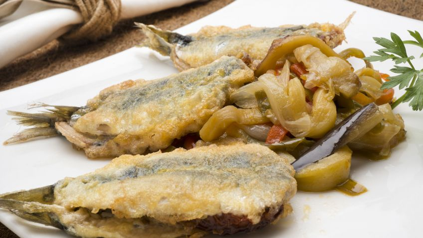
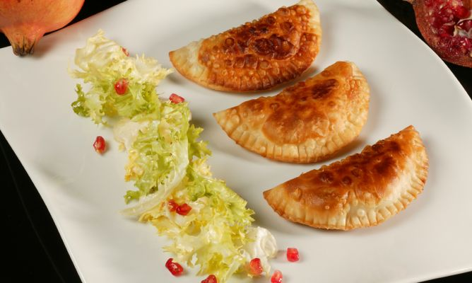
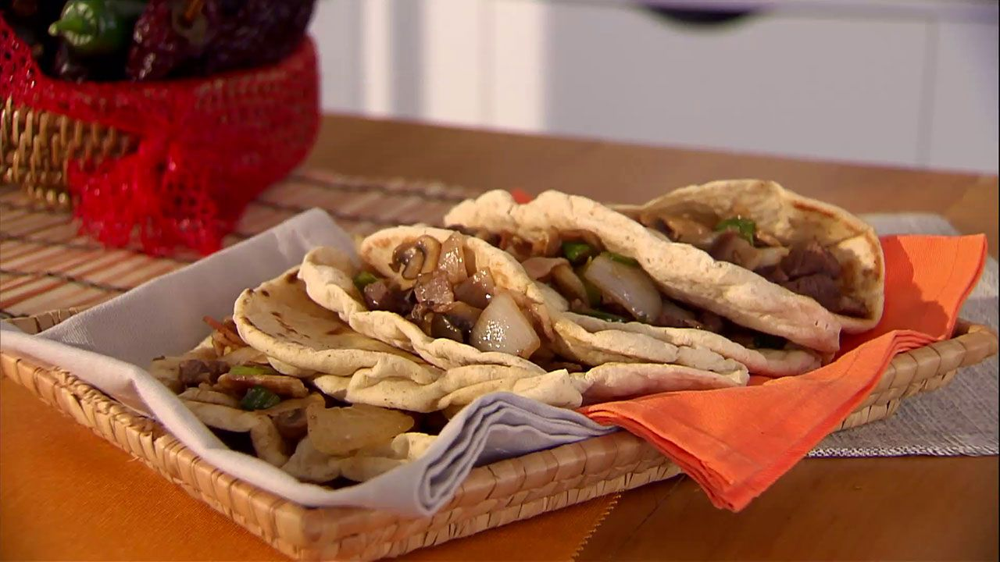

Entrantes
Sardinas rellenas con verduras al azafrán
Ingredientes (4 personas)
- 24 sardinas
- 12 tomates en aceite
- 2 pimientos verdes
- 1 pimiento rojo
- 2 cebolletas
- 1 berenjena
- 50 ml de vino blanco
- 2 huevos
- harina
- aceite de oliva virgen extra
- sal
- azafrán
- perejil
Elaboración
- Pela el pimiento rojo. Pica los pimientos, las cebolletas y la berenjena en tiras. Pon todo a rehogar en una tartera con un chorrito de aceite, sazona y cocínalas hasta que se pochen bien.
- Añade las hebras de azafrán, rehógalo un poco, vierte el vino y dale un hervor y cocínalas hasta que estén a punto. Reserva las verduras.
- Limpia las sardinas retirándoles las cabezas, las tripas y la espina central. Sazona y extiende la mitad sobre una superficie lisa, pon un tomate encima de cada una y tápalas con el resto de las sardinas. Sazona.
- Pasa las sardinas por harina y después por el huevo batido. Fríelas en una sartén con aceite. Escúrrelas sobre un plato forrado con papel absorbente de cocina.
- Sirve las sardinas con las verduras y adorna con unas hojas de perejil.

Empanadillas de queso, espinaca y huevo
Ingredientes (4 personas)
- 12 obleas de empanadilla
- 200 gr. de queso manchego Don Bernardo
- 250 gr. de espinacas
- 2 huevos cocidos
- 1 escarola
- 1 granada
- 2 dientes de ajo
- agua
- aceite virgen extra Hojiblanca
- vinagre
- sal
Elaboración
- Escurre las espinacas y pícalas finamente. Mezcla las espinacas con el huevo picado.
- Pica finamente un diente de ajo y saltéalo junto con la mezcla de espinacas y huevo, en una sartén con un poco de aceite.
- Extiende las obleas, rellénalas con la mezcla y pon en cada una un par de trocitos de queso. Ciérralas presionando todo el borde con un tenedor. Fríelas en una sartén con aceite, escúrrelas y reserva.
- Pela el otro diente de ajo y unta con él una fuente. Limpia la escarola, escúrrela y trocéala sobre la fuente. Desgrana la granada e incorpórala.
- Sirve las empanadillas y acompáñalas con la ensalada.

Atún al ajillo con tomate
Ingredientes
- 800 gr. de atún
- 4 tomates
- 8 dientes de ajo
- aceite virgen extra
- sal
- 4 hojas de albahaca
- perejil (para decorar)
Elaboración
- Limpia el atún, quítale la piel y córtalo en tacos gruesos. Sazona y resérvalos.
- Lamina los dientes de ajo y dóralos en una sartén con un chorrito de aceite. Cuando tomen color añade los tacos de atún. Saltea 2-3 minutos.
- Retira el extremo de arriba y de abajo de los tomates y parte el resto en dos mitades. Sazona las mitades y cocínalos a la plancha por los 2 lados. Colócalos en un plato y rocíalos con las hojas de albahaca picaditas. Reserva.
- Pica las hojas de albahaca y rocía los tomates. Resérvalos.
- Sirve los tomates en un plato y coloca encima los tacos de atún.
- Salsea con el jugo de la sartén y con los ajos. Decora con una ramita de perejil.

Tacos de pan árabe
Ingredientes (4-6 personas)
- 2 filetes de vaca
- 4 lonchas de panceta
- 8 champiñones
- 1 cebolleta
- 1 chile verde
- 1 diente de ajo
- 2 lonchas de queso gouda
- aceite de oliva virgen extra
- sal Para hacer el pan árabe:
- 250 gr de harina
- 50 gr de harina integral
- 1 cucharada de azúcar moreno
- 2 gr de levadura de panadero seca
- 150 ml de agua
- aceite de oliva virgen extra
- sal
- za´atar
- harina para estirar
Elaboración
- Para hacer los panes árabes, mezcla en un bol la harina, la harina integral, la levadura, el azúcar y una pizca de za´atar. Haz un hueco en el centro, vierte el agua, un chorrito de aceite de oliva y sal.
- Mezcla los ingredientes primero con una espátula y luego amasa con la mano hasta que quede una masa homogénea.
- Pásalo a una superficie lisa, riega con un poco más de aceite y sigue amasando hasta que no se pegue en las manos. Forma una bola, cubre con un paño y deja que fermente durante 1 hora.
- Prepara un aceite de za´atar, mezclando una cucharada de za´atar con un buen chorro de aceite de oliva.
- Estira la masa sobre una superficie lisa con un rodillo y espolvoreando un poco de harina. Forma unas bolas y estíralas formando unas obleas finas. Introduzca una a una en el horno a máxima temperatura (encendido previamente) y espera a que suflen y se tuesten ligeramente.
- Retira y unta con el aceite de za´atar.
- Para los tacos, sazona los filetes y cocínalos en una sartén a fuego vivo con un chorrito de aceite de oliva.
- Retira los filetes y agrega el ajo y la panceta picados.
- Cuando empiecen a dorarse añade la cebolleta, el chile y los champiñones, todo picado.
- Sazona y saltea el conjunto. Trocea y agrega los filetes al salteado junto con el queso. Mezcla y espera que se funda.
- Calienta brevemente los panes árabes en el horno y sirve el salteado en el centro de cada pan para formar los tacos.

Rollitos de salmón y aguacate
Ingredientes (2 personas)
- 8 filetes de salmón ahumado
- 1 aguacate
- 1/2 limón
- vinagre de Módena
- aceite de oliva
- sal
- cebollino
Elaboración
- Tritura el aguacate con unas gotitas de zumo de limón.
- Sazona y riega con un chorrito de aceite de oliva.
- Introduce todo en una manga pastelera.
- Enrolla los filetes de salmón ahumado y rellénalos con el aguacate. Espolvorea con cebollino picado.
- Decora el plato con unas gotitas de aceite y de vinagre y pon encima los rollitos.
- Acompaña con unas rodajitas de limón.
Ensalada de rúcula, manzana y tocineta
Ingredientes (4 personas)
- 125 gr de rúcula
- 1 manzana
- 4 lonchas de tocineta ahumada
- aceite de oliva virgen extra
- vinagre de módena
- sal
Elaboración
- Lava las hojas de rúcula, sécalas y colócalas en una fuente.
- Pela la manzana, córtala en daditos y añádelos a la fuente.
- Corta las lonchas de tocineta en dados y fríelos en una sartén con unas gotas de aceite hasta que queden crujientes.
- Escurre y agrégalos a la ensalada.
- Adereza con aceite, vinagre y sal. Sirve.

Salmorejo cordobés con berenjenas
Ingredientes (4-6 personas)
- 8 tomates rojos
- 8 tomates asados en conserva
- 1 berenjena
- 1 diente de ajo
- 100 g de jamón serrano
- 4 huevos
- 200 g de miga de pan
- harina para rebozar
- 150 ml de agua
- 250 ml de soda
- 1/2 cucharada de vinagre
- 150 ml de aceite de oliva
- sal
Elaboración
- Cuece los huevos en un cazo con agua y sal. Refresca, pela y pícalos finamente.
- Pon la soda en un bol e incorpora la berenjena troceada. Deja que se macere un rato.
- Pon en el vaso de la batidora la miga de pan, el agua, un chorrito de vinagre, los tomates asados, los tomates frescos cortados en cuartos, el ajo y una pizca de sal.
- Tritura.
- Vierte un chorro de aceite mientras sigues triturando. Pasa el salmorejo a un bol grande.
- Tápalo y deja que se enfríe en el frigorífico durante 2 horas aproximadamente.
- Escurre los trozos de berenjena, pásalos por harina y fríelos en una sartén con un chorrito de aceite de oliva.
- Pica el jamón en juliana fina.
- Emplata el salmorejo en un plato hondo.
- Esparce por encima un poco de huevo, perejil picado, unas tiras de jamón y unos trocitos de berenjena.
- Riega con un chorro de aceite de oliva y sirve.

Gazpacho de tomate y cerezas
Ingredientes (4 personas)
- 1 kg de tomate
- 1 cebolleta
- 1 manzana
- 250 gr de cerezas
- 30 gr de miga de pan
- aceite de oliva virgen extra
- vinagre de Jerez
- sal Para la guarnición:
- 3 pimientos dulce
- 1/2 aguacate
- 1 cabeza de ajo negro
- cebollino
Elaboración
- Trocea la miga de pan y colócala en un bol con agua.
- Lava y trocea los tomates y la manzana y coloca todo en un bol.
- Retira la primera capa de la cebolleta, pícala y agrégala.
- Retira los huesos de las cerezas, córtalas por la mitad e incorpora al bol.
- Tritura en la jarra americana y pasa por el pasapurés. Añade la miga remojada, el agua del remojo, un chorrito de vinagre y un buen chorro de aceite de oliva.
- Sazona y tritura de nuevo con la batidora eléctrica.
- Enfría en el frigorífico.
- Pela el aguacate y pícalo en daditos.
- Pela los ajos negros.
- Pica el cebollino y los pimientos.
- Sirve el gazpacho con la guarnición.